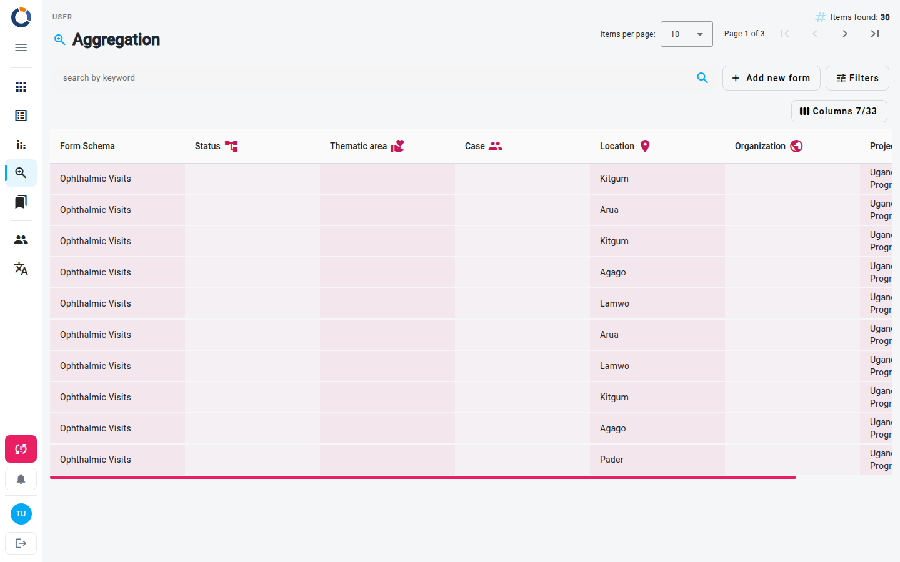
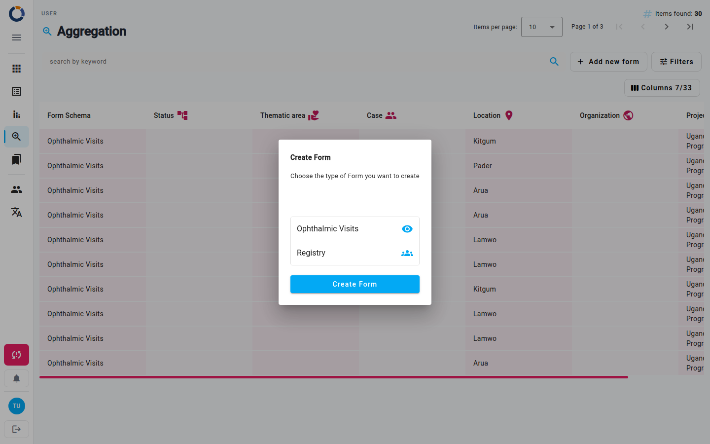

Aggregazione
La pagina Aggregazione offre una visualizzazione centralizzata di tutti i dati dei form di tutti i tuoi form schema. Invece di aprire ogni form singolarmente, puoi sfogliare tutti i dati in un'unica tabella, restringerli con i filtri ed eseguire azioni come visualizzare, modificare, stampare o eliminare.

Visualizzare la lista di aggregazione
La tabella mostra una riga per ogni insieme di dati. Per impostazione predefinita vedi le colonne Form Schema e Stato; usa il pulsante Colonne sopra la tabella, a destra, per scegliere quali colonne visualizzare.
- Ogni riga mostra un'icona di stato. Se dei dati presentano problemi di validazione, sulla riga compare un'icona di avviso.
- Passa il mouse su una riga per mostrare le icone Vedi e Modifica; clicca in un punto qualsiasi di una riga per selezionarla e rivelare tutte le azioni disponibili.
- Il contatore Elementi trovati e il paginatore in cima alla pagina ti indicano quanti dati esistono e ti permettono di spostarti tra le pagine.
Se non applichi alcun filtro, la lista mostra tutti i dati che ti è consentito vedere, in base ai tuoi permessi utente.
Filtro e ricerca
- Digita nel campo cerca per parola chiave nella barra degli strumenti per cercare tra i dati.
- Clicca Filtri nella barra degli strumenti per aprire il pannello dei filtri.
- Scegli una Data di partenza e un Fino ad oggi per filtrare per data di creazione.
- Compila uno qualsiasi dei filtri aggiuntivi: Area, Caso, Codice caso, Posizione, Organizzazione, Progetto, Stato del Form e Utente. I valori proposti dipendono dalle metriche configurate nel tuo Dino.
- Clicca Cerca per applicare i filtri, oppure Azzera filtri per rimuoverli.
I filtri attivi compaiono come chip sotto la barra degli strumenti. Clicca l'icona cancella su un chip per rimuovere quel filtro.
Nessun preset salvato
La pagina Aggregazione non supporta preset di filtri salvati né condizioni di filtro avanzate. Combini i filtri ogni volta che ti serve una visualizzazione personalizzata; rimuovere un chip è il modo più rapido per allentare una ricerca esistente.
Azioni sulle righe
Passa il mouse su una riga per mostrare le icone Vedi (occhio) e Modifica (matita). Per vedere tutte le azioni, clicca la riga per selezionarla: la barra delle azioni sopra la tabella mostra allora un pulsante per ogni azione che ti è consentito usare.
| Azione | Descrizione |
|---|---|
| Vedi | Apri i dati in modalità sola lettura. |
| Modifica | Modifica i dati. |
| Stampa | Genera un PDF dei dati. |
| Elimina | Rimuovi i dati. |
Stampa ed Elimina chiedono conferma (Do you want to print the selected items?, Si / No) prima di essere eseguite.
Creare nuovi dati
Il pulsante Aggiungi nuovo form nella barra degli strumenti ti permette di iniziare a inserire nuovi dati. È mostrato solo se la creazione di dati dalla pagina Aggregazione è abilitata per la tua istanza Dino.

- Clicca Aggiungi nuovo form. Si apre la finestra di dialogo Crea Form, che elenca i form schema disponibili.
- Seleziona il form schema che vuoi usare.
- Clicca Crea Form. Vieni portato alla pagina Modifica Form, dove compili e salvi i dati.
Stampare un PDF
Puoi generare un PDF di qualsiasi insieme di dati. Il PDF include l'etichetta del form schema, i nomi delle metriche attive e i dati che sono stati compilati.
- Clicca la riga che vuoi stampare per selezionarla, poi clicca Stampa nella barra delle azioni.
- Conferma con Si.
- Il PDF si apre in una nuova scheda del browser o viene scaricato automaticamente.
L'intestazione del PDF include il titolo del form schema e tutti i nomi delle metriche attualmente attive nel sistema.
Disponibilità delle metriche
Il PDF include solo le metriche attive nel momento in cui avvii la stampa. Una metrica aggiunta dopo la creazione dei dati non comparirà.
Pagine correlate
- Form — gestisci i form schema alla base dei tuoi dati.
- Modifica Form — compila e aggiorna i dati.
- Importazione dati — importa dati in Dino in blocco.
- Metriche — configura le metriche che alimentano i filtri e l'output stampato.